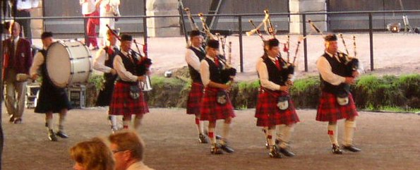

Eevastiina Korri
Pipe Major Annukka Matilainen [kotisivu] - SCOC 1999 Slow Air Beginners 1. - SCOC 1999 March Beginners 1. - SCOC 2000 2/4 March Intermediate 1.
Pipe Sergeant Albert Lindqvist
Päivi Järvinen
Gavin Hardie - 2008 Scandinavian Piping Champion
Mikaela Grönqvist
HALUAISITKO ALKAA SOITTAMAAN SÄKKIPILLIÄ?